История изобретения пылесоса
Многие товары, призванные облегчить жизнь и быт людей, появились во время Американской индустриальной революции конца XIX – начала XX века. Пылесосы были среди таких продуктов, как стиральная машина, холодильник и автомобиль.
Сегодня пылесосы считаются обычными бытовыми приборами и встречаются почти в каждом доме. Однако не так давно, всего около века назад домашние хозяйки пользовались лишь щетками и тряпками на швабрах, чтобы убрать грязь дома.
Первый известный патент на пылесос, патент США № 29077, получен 10 июля 1860 года американцем Дэниелом Хессом из Айовы. «Подметатель ковров», как назвал своё устройство изобретатель, был оборудован вращающейся щёткой и сложной системой мехов для создания всасывающего воздушного потока. По пути воздух проходил через две водяные камеры с целью очистки от пыли и грязи. Нет никаких свидетельств, что такая машина когда-либо производилась.
Следующим шагом стала машина Whirlwind, изобретенная Ивом Маккафи из Чикаго в 1869 г. и по компоновочной схеме очень похожая на современный пылесос «вертикального» типа, по сей день популярный в Америке. Воздух приводился в движение вентилятором с ременным приводом от рукоятки в верхней части прибора, которую нужно было крутить рукой. К сожалению, попытки изобретателя приспособить к своему прибору электромотор не увенчались успехом.
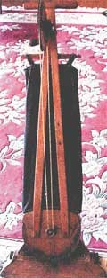Маккафи получил патент на своё изобретение 5 июня 1869 года и стал продавать его, основав бостонскую компанию American Carpet Cleaning Company. Стоил пылесос 25 долл. — немалая сумма по тем временам (в то время один американский доллар составлял около 23 граммов серебра).
3 октября 1899 года Джон С. Тормен (John S. Thurman) получил патент США № 634042 на бензиновый пылесос. Некоторые исследователи считают его изобретателем первого пылесоса с мотором.
Патент на электрический «подметатель ковров» и «собиратель пыли» получила в декабре 1900 года Коринн Дюфур (Corinne Dufour) из Саванны, Джорджия. Её пылесос обладал двумя вращающимися щётками и электрическим насосом, а пыль собиралась на мокрую тряпку. Устройство было непрактичным и не пользовалось спросом.
Начало XX века

В 1901 году британец Хьюбер Сесил Бут получил патент на электрический пылесос. Он обратил внимание на применявшееся в поездах устройство для сдувания пыли с сидений и решил, что было бы гораздо практичнее всасывать пыль. Для проверки идеи Бут положил платок на сиденье обеденного стула и попытался всосать ртом как можно больше пыли. Обнаружив, что пыль собралась на нижней части платка, он понял, что его идея работоспособна.
Бут сконструировал большое устройство, известное как Puffing Billy (Фырчайщий Билли), приводимое в движение сначала бензиновым, а потом электрическим мотором. Устройство перевозилось лошадьми и парковалось снаружи дома, а для чистки ковров использовался 30-метровый шланг, протягивавшийся через окно. Бут основал British Vacuum Cleaner Company. Среди клиентов Бута была королева Виктория, а также британское адмиралтейство: очистив от пыли бараки британских моряков, компания Бута положила конец эпидемии чумы. Интересен случай, происшедший с Бутом после чистки монетного двора: его задержала полиция, обвинив в краже золота. Дело в том, что Бут забыл выбросить пыль, и в его пылесосе скопилось большое количество золотого песка. В первые годы XX века в Британии даже вошли в моду vacuum cleaner parties: леди из высшего общества пили чай, наблюдая, как служащие Бута чистят ковры в доме.
Аналогичную компанию основал Джон С. Тормен в Сент-Луисе. Услуги его компании стоили 4 долл. в 1903 году.
Ещё продолжали совершенствоваться и механические пылесосы. В 1905 году Уолтер Гриффитс из Бирмингема создал «Griffith’s Improved Vacuum Apparatus for Removing Dust from Carpets», использовавший меха для засасывания пыли. Его пылесос был портативным, компактным и напоминал современные пылесосы.
Между 1903 и 1913 годами изобретатель Дэвид Т. Кенни из Нью-Джерси получил 9 патентов на технологии, связанные с пылесосами. В 1919 году была основана Ассоциация производителей пылесосов, членство в которой требовало лицензии на его патенты.
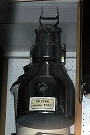В 1910 году П. А. Фискер (P. A. Fisker) запатентовал электрический пылесос, название которого он взял из телеграфного адреса компании: Нилфиск. Этот пылесос весил всего 17,5 кг и мог приводиться в действие одним человеком. Компания, основанная Фискером и его компаньоном Нильсеном (Nielsen) существует до сих пор и называется Nilfisk-Advance. Но ещё до Фискера, в 1907 году, Джеймс Мюррей Спранглер создал портативный электрический пылесос.
W. H. Hoover
Фирма «Упряжь и кожаные товары Хувера» искала новую продукцию, которую она могла бы производить, потому что спрос на упряжь (сбруя) падал по мере распространения автомобилей.
Мюррей Спенглер работал уборщиком на фабрике кожевенных изделий Уильяма Хувера и страдал от аллергии на пыль. Прочитав в газетах о триумфальном успехе машины Бута, он задался целью создать ее электрический вариант. В 1907 г. он соорудил неказистое устройство, стержнем которого была палка от швабры, а в качестве пылесборника использовалась наволочка. Но прибор работал! Критически важным элементом пылесоса была вращающаяся щётка.
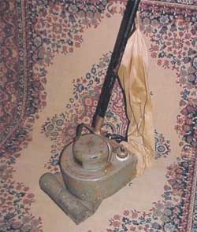Изобретатель начал продажу своих пылесосов, и уже один из первых образцов пришелся по душе жене Хувера. Тот сразу же понял, что у нового прибора большое будущее, и купил у Спенглера патент на его производство. Первый пылесос назывался «Модель О», стоил 60 долл. и стал необычайно популярным.
Шаги прогресса
Идея пылесоса оказалась весьма удачной, и изобретатели разных стран активно взялись за совершенствование прибора. Но человек, создавший одну из наиболее популярных моделей пылесоса, не был ни изобретателем, ни инженером… Он был гениальным продавцом международного масштаба.
Швед Аксель Веннер-Грен (Axel Wenner-Gren) родился в 1881 г. и после окончания школы был вынужден самостоятельно зарабатывать себе на жизнь. Когда ему исполнился 21 год, он приехал в Берлин, где начал карьеру продавца на фирме «Сепаратор» (сегодня знаменитая шведская фирма «Альфа-Лаваль»). В 1910 г., будучи по делам фирмы в Вене и прогуливаясь по Кертнерштрассе, Аксель заинтересовался диковинным американским прибором, выставленным в витрине магазина. Прибор назывался «Санто». Он имел мотор и насос, весил около 20 кг и стоил 500 шведских крон. Это был пылесос, который, однако, нельзя было назвать бытовым. Молодой Аксель сказал: «Если бы я мог это сделать легче и дешевле, я бы продал его в каждый дом в мире».
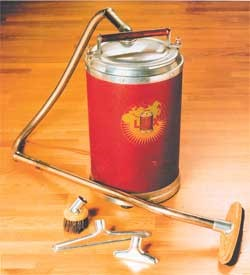Два года Аксель проработал в европейском филиале компании «Санто» и в США, где изучал новые для Европы методы продажи товаров. В Швецию он вернулся с мечтой, которая родилась перед витриной с заокеанским пылесосом. Веннер-Грен организовал команду инженеров, которые начали разрабатывать первый бытовой пылесос, увидевший свет в 1912 г. Он получил название Lux1.
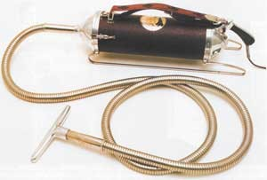Заслугой команды Веннер-Грена стала замена воздушного насоса на вентилятор, благодаря чему вес прибора удалось снизить до 14 кг. Модель Lux1, производство которой было налажено в 1912 г. на небольшой фабрике в Стокгольме, стала пионером обширной линейки бытовых приборов, чей производитель — фирма Electrolux — сегодня известна во всем мире. В 1921 г. был выпущен простой и удобный пылесос на колесиках с цилиндрическим корпусом. Эта знаменитая Model V стала прообразом многочисленных «клонов», долгие годы выпускавшихся в разных странах (вспомните советские «Ракеты»).
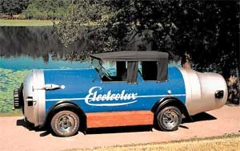1920-е гг. прошли для компании под лозунгом «Каждый дом — дом Electrolux». Используя в работе навыки, полученные в США, Аксель Веннер-Грен стал применять прямые продажи пылесосов. Огромное количество машин в форме пылесосов разъезжали сначала по Швеции, а затем и по всей Европе, демонстрируя технические достоинства пылесоса. Эта акция принесла успех фирме. Бюллетени, соревнования по продажам между продавцами, обучающие курсы… Делалось все, чтобы внедрить в сознание людей необходимость приобретения удобных бытовых приборов.
Шли годы. Семейство пылесосов расширялось, обрастая новыми разновидностями: ручными малютками для чистки салона автомобиля и гигантами, способными собирать пыль с улиц, моделями с циклонным принципом отделения пыли и такими, в которых пыль осаждалась в емкости с водой. Совершенствовались мешки-пылесборники, изобретались хитроумные насадки, росла мощность всасывания, снижался шум.
Виды пылесосов
Принцип работы и система фильтрации
Моющие пылесосы
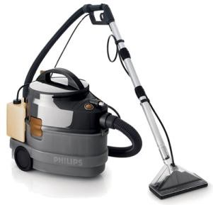Функции, выполняемые моющим пылесосом:
- Сухая уборка
- Мойка различных поверхностей
- Сбор пролитой жидкости (водяной насос)
Дополнительно моющие пылесосы могут выполнять функции: подогрева воды, паровой очистки, мойки и сушки твердых гладких поверхностей.

Оптимальными поверхностями для влажной уборки являются ковровые покрытия с низким ворсом, полы и стены, покрытые кафельной плиткой или вымощенные камнем. Моющие пылесосы лучше не использовать на паркете, ламинате, коврах с высоким ворсом, а также на полированных поверхностях, не терпящих влаги.
Схема работы моющей насадки
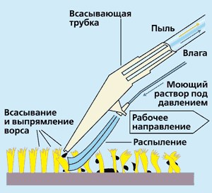Вода впрыскивается из форсунки, расположенной под насадкой, под высоким давлением. Грязь, находящаяся в ковре, вместе с водой из пылесоса опускается к основанию ворса. Затем, при помощи узкой всасывающей насадки, грязь с водой забирается в пылесос. Насадку необходимо держать строго под определенным углом, двигать строго по направлению «к себе». Ворс при этом заминается. Большое количество влаги и грязи остается в ковре.
Несколько иначе устроена моющая насадка у пылесосов VAX: вода с моющим раствором подается непосредственно в насадку (без давления). Вакуумом, создаваемым насадкой, вода всасывается через ворс внутрь насадки, как бы простирывая ковер. Влаги остается меньше, но промывка происходит только на поверхности.
Плюсы моющих пылесосов:
- Универсальность уборки.
- Пыль смывается водой (естественная природная очистка), по мере заполнения грязью сила всасывания не теряется.
- «Какая бы эффективная система очистки воздуха не стояла в пылесосе, она никогда не помоет полы».
Минусы моющих пылесосов:
- Большая остаточная влажность после уборки. Ковры сохнут медленно, если уборку производить часто, то они не успевают просыхать полностью. Возможно образование плесени, грибка. Идеальные условия для размножения различных бактерий и микроорганизмов. Для маленьких детей это основная зона игр и развития. Для взрослых неудобство – по коврам нельзя ходить до высыхания.
- Остатки грязи во влажной среде очищаемых поверхностей вследствие недостаточной силы всасывания и несовершенства насадок способствуют скорейшему размножению микроорганизмов.
- Остатки моющего средства на очищаемой поверхности.
- Наряду с меньшей силой всасывания, моющие пылесосы также проигрывают по степени фильтрации мешковым пылесосам с фильтрами тонкой очистки.
- Ограничение по типам поверхностей, подходящих для влажной уборки.
- Большие габариты (при работе и хранении пылесоса) и значительный вес конструкции, плюс – вода во время уборки.
- Длительность и сложность сборки пылесоса для работы, трудоемкость работы (при мытье и при сухой уборке), дополнительные операции по замене воды и очистке пылесоса во время процесса уборки, обязательная мойка и сушка всех пачкающихся узлов пылесоса после уборки (во избежание появления неприятного запаха и гигиенические требования). В комнате сохнут очищенные поверхности, а где-то в коридоре – все части пылесоса.
- Вследствие трудоемкости влажной уборки моющий пылесос чаще используют для сухой уборки, которому он значительно проигрывает по комфорту и качеству уборки.
- Большой по объему пылесборник (в случае сухой уборки в мешок) долго заполняется, появляются неприятные запахи, при переходе на режим мойки, не полностью наполненный мешок надо снимать и где-то хранить, либо выбрасывать (а это неэкономично).
Пылесосы с аквафильтром
Система фильтрации барбатажного типа
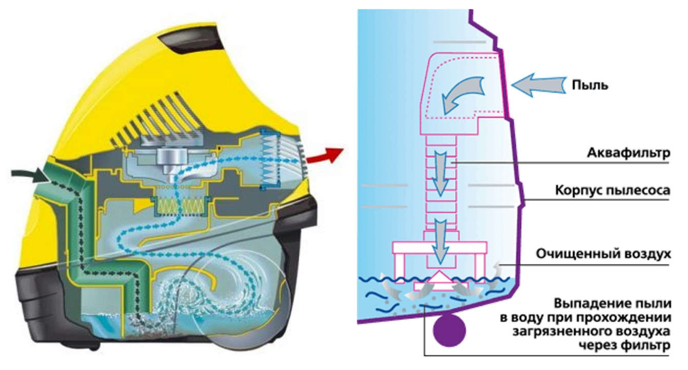Воздух с пылью из всасывающей трубки поступает в емкость с водой, где он проходит через толщу воды, при этом частицы пыли смачиваются и оседают в воде. Очищенный воздух поступает для доочистки от не успевших осесть частиц пыли на выпускные фильтры тонкой очистки.
Вода одновременно очищает воздух и увлажняет его (заявляют производители).
Система фильтрации «душем»
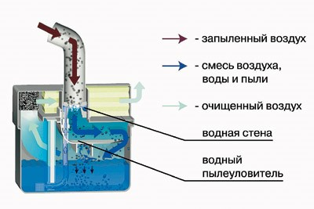Вода распыляется внутри контейнера в виде мелкодисперсного душа, через который проходит воздух с пылью. Пыль, попадая под водяной душ, смачивается водой и падает на дно контейнера. Далее воздух поступает на выпускные фильтры.
Плюсы пылесосов с аквафильтром:
- Не требуются мешки, вся пыль собирается в воду, достаточно после уборки просто помыть контейнер. По мере уборки сила всасывания не теряется.
- Можно всасывать пролитую жидкость (водяной насос).
- Воздух выходит не только очищенный, но и увлажненный. Природный принцип очистки воздуха – мокрая пыль не летает.
Минусы пылесосов с аквафильтром:
- Низкий уровень фильтрации воздуха посредством воды, поэтому есть необходимость установки дополнительных фильтров на выходе (а для чего тогда все неудобства, связанные с водой – вес, трудоемкость работы и т.д.?).
- Выпускные фильтры подвергаются воздействию загрязненного влажного воздуха, что способствует скапливанию и размножению на поверхности фильтров микроорганизмов, плесени, грибков и т.д. К тому же во влажной среде изнашивание фильтров происходит быстрее.
- В контейнере с грязной водой создается благоприятная среда для размножения микроорганизмов. В процессе уборки образуется большое количество пены. Приходится использовать специальные пеногасители или периодически менять воду на чистую – большая трудоемкость эксплуатации.
- Низкий уровень всасывания при повышенном энергопотреблении и большем уровне шума, чем при использовании мешковой технологии фильтрации.
- Большие габариты (при работе и хранении пылесоса) и значительный вес конструкции, плюс – вода во время уборки.
- Длительность и сложность сборки пылесоса для работы, трудоемкость работы, дополнительные операции по замене воды и очистке пылесоса во время процесса уборки, обязательная мойка и сушка всех пачкающихся узлов пылесоса после уборки (во избежание появления неприятного запаха и гигиенические требования).
Контейнерные пылесосы
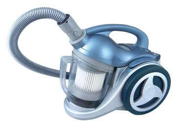Принцип работы таких пылесосов основан на прохождении загрязненного воздуха через специальный контейнер (обычно пластиковый), внутри которого расположен пылевой гофрированный фильтр (цилиндрический или конусный). Крупная грязь осаждается в емкости контейнера, мелкая пыль на поверхности фильтра. Потом воздух попадает на фильтры тонкой очистки. В этой системе нет необходимости замены мешков. Крупный мусор вытряхивается из контейнера, гофрированный фильтр очищается и со временем меняется.
Плюсы контейнерных пылесосов:
- Экономия средств на замене мешков.
- Если с мусором в контейнер попадают нужные предметы, то их можно заметить и извлечь из пылесоса.
Минусы контейнерных пылесосов:
- Необходимость замены гофрированного фильтра по мере его забивания, дополнительно предварительная его периодическая очистка. Забивание этого фильтра зачастую происходит быстрее, чем наполнение мешка пылью, а стоимость его одного близка к стоимости упаковки мешков, состоящей из нескольких штук.
- Негигиеничная и частая очистка контейнера от пыли и грязи (объем контейнера обычно меньше объема мешка). Грязь из контейнера необходимо или выбрасывать на улицу, в мусоропровод, в унитаз и т.д., или пересыпать в мусорный мешок. Во избежание появления неприятного запаха старой пыли и для уничтожения мелких паразитов необходимость ухода за контейнером – мойка и сушка. Для аллергиков это неприятная и опасная процедура.
- Неэстетичный внешний вид прозрачной колбы со скопившимся мусором.
- Сила всасывания быстро снижается. Повышенный уровень шума по сравнению с мешковой технологией.
Циклонические пылесосы
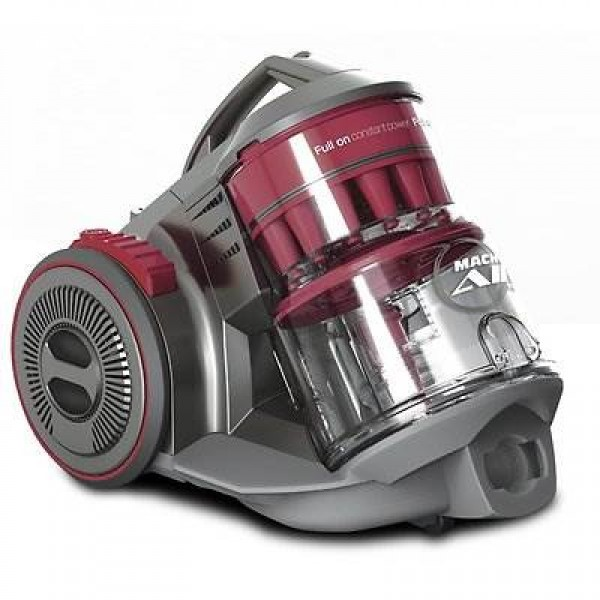- Принцип фильтрации циклонических пылесосов: при создании вращения воздушного потока внутри цилиндрической емкости, частички пыли и грязи за счет собственного веса утяжеляются, приобретают ускорение и за счет центробежной силы выпадают из воздушного потока, а очищенный воздушный поток выходит из емкости.
- Есть очевидное правило в технологии «циклон» - чем выше скорость вихревого потока, тем выше центробежная сила.
- Магистраль вихревого потока, выполненная в конусной форме, многократно увеличивает центробежные силы. Это позволяет отделять даже микроскопические частички пыли из воздушного потока.
- Для дальнейшей очистки, воздух подается на моторный фильтр и фильтр тонкой очистки.
Плюсы циклонических пылесосов:
- Не требуют приобретения расходных материалов, грязь легко высыпается из колбы.
- Работают без потери силы всасывания, вследствие того, что не происходит забивания фильтров.
- Если с мусором в колбу попадают нужные предметы, их можно заметить и легко извлечь.
Минусы циклонических пылесосов:
- Негигиеничное удаление пыли из колбы. Грязь необходимо высыпать на улицу, в мусоропровод, в унитаз или в мусорный пакет, при этом потребитель будет дышать пылью. Для аллергиков это неприятная и опасная процедура. В случае, если пыль смачивать в колбе водой, то после удаления мусора, емкость нужно будет тщательно промывать, чтобы не появился неприятный запах, а потом полностью высушивать, во избежание попадания воды на двигатель. В пластиковых циклонах вода сохнет очень долго.
- Низкая сила всасывания при повышенном уровне шума (работает воздушная турбина), по сравнению с мешковой технологией.
- Поскольку эффективная фильтрация воздуха происходит на максимальных оборотах воздушного потока, то в таких пылесосах отсутствует возможность электронной регулировки понижения силы всасывания. Они работают только на максимальных оборотах двигателя.
- Неэстетичный внешний вид прозрачной колбы, заполненной мусором, которую нужно периодически промывать для удаления неприятного запаха старой пыли и для уничтожения мелких паразитов.
- Пластиковые решетки и циклоны быстро забиваются пылью, волосами и шерстью животных. Необходима частая и трудоемкая негигиеничная очистка.
- При отсутствии мешков, сохраняется необходимость очистки и замены фильтров тонкой очистки, используемых для фильтрации воздуха от микропыли в момент пуска/остановки пылесоса, дофильтрации воздуха после циклонов, удержания графитовой пыли со щеток двигателя, которая также является аллергеном, предотвращения появления неприятного запаха старой пыли. Технология также требует расходных материалов.
- Если после циклонов установлены дополнительные фильтры, значит, в них есть необходимость и они фильтруют воздух. Если они задерживают грязь, то чистая поверхность фильтра уменьшается, а, значит, скорость воздушного потока снижается, и сила всасывания падает – нет постоянства силы всасывания.
- Стоимость таких приборов не низкая, а у качественных циклонических пылесосов со специальными эффективными насадками еще и значительно превышает цену топовых мешковых пылесосов. Т.е. потребитель платит больше за систему, дающую меньше комфорта по уборке и дальнейшему обслуживанию.
Мешковые пылесосы
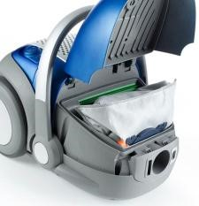- Основная грязь и пыль собираются в многоразовый или одноразовый мешок. Мешки могут быть многослойными с качеством фильтрации S-класса, а также могут иметь герметичную крышку горловины при вынимании мешка из пылесоса.
- Из мешка воздух подается на моторный и выпускные фильтры для тонкой очистки.
Если раньше люди собирали бытовые отходы в мусорное ведро, затем из ведра мусор высыпали в мусоропровод, контейнеры на улице, а иногда это ведро приходилось еще и мыть, то сейчас люди используют специальные мешки для мусора, что делает утилизацию отходов простой, быстрой, гигиеничной, без трудоемких затрат на мытье, также исключая при этом появление неприятного запаха. При использовании мешковых пылесосов процесс абсолютно аналогичный. Много ли найдете сейчас людей, которые захотят вернуться к помойным ведрам?

Материалы, из которых изготавливаются одноразовые мешки, можно подбирать индивидуально для каждого типа уборки – стандартные, для аллергиков, для строительного, крупного или мусора с острыми кромками, и т.д. При этом утилизация мусора в мешке может быть абсолютно гигиеничной, быстрой, не потребует даже мытья рук после смены мешка. Да и герметичность мешка позволяет не ухаживать за внутренними поверхностями пылесоса, нет необходимости со временем удалять с них грязь.
Плюсы мешковых пылесосов:
- Легкая, удобная работа, и гигиеничная замена мешка.
- Максимальная сила всасывания при минимальном уровне шума среди иных типов пылесосов.
- Высокое качество фильтрации воздуха.
- Долгое наполнение мешка пылью и грязью, редкая замена фильтра.
- Недорогое обслуживание пылесоса, доступность по наличию расходных материалов.
- Самые массовые пылесосы, поэтому лучшие производители используют в них самые передовые технологии, системы фильтрации, специальные насадки.
- Большинство пылесосов имеют плавную электронную регулировку силы всасывания, предназначены для разнообразных типов уборки.
- Компактные размеры прибора, удобное хранение.
- Не требуется подготовка к работе (сборка пылесоса, заполнение его водой), нет дополнительных затрат во время и после уборки (удаление грязи из пылесоса, мойка и сушка узлов прибора) – взял, пропылесосил, убрал на место.
Минусы мешковых пылесосов:
- Необходимость менять или очищать мешки.
- По мере заполнения мешка снижается сила всасывания.
Пылесосы-роботы
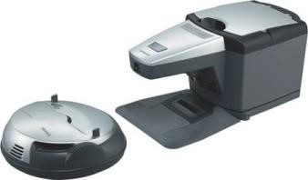Мечта любой хозяйки – автоматическая система уборки дома, которая осуществляется без участия человека. Современные технологии позволили внедрить в пылесосы-роботы систему всасывания, электрические щетки, влажную уборку, систему навигации, автоматическое определение степени загрязнения пола, автоматическую подзарядку прибора и авто-очистку заполненного контейнера для мусора, программируемый таймер включения и продолжительности чистки и т.д.
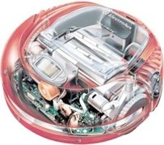К минусам таких систем можно отнести неэффективность уборки (низкая сила всасывания, плохое отделения мусора с очищаемой поверхности, невысокий уровень фильтрации воздуха, невозможность очищать пол в труднодоступных местах, углах, узких проходах) и необходимость иметь совместно с ними пылесос для высококачественной уборки, позволяющий лучше всасывать грязь, очищать не только пол, но и все остальные поверхности в помещении, производя даже глубинную очистку мягкой мебели, использовать его на разных уровнях, максимально очищать выходящий воздух, реже менять расходные материалы и т.д. А за стоимость некоторых пылесосов-роботов можно приобрести домой целую систему очистки воздуха.
Ручные пылесосы
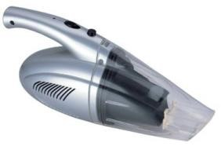К ним же относятся пылесосы для кухни и автомобильные.
Питание таких пылесосов осуществляется от сети 220V, 12V (авто) или автономная работа от встроенного аккумулятора. Предназначены они для быстрой универсальной и «местной» уборки, очистки в труднодоступных местах. Можно собирать легкий мусор, просыпавшуюся грязь или песок, многие модели позволяют собирать пролитую жидкость. Большинство ручных пылесосов работают без мешков (на конусных очищаемых фильтрах). Некоторые модели снабжены турбо или электрощетками. Существуют модели с удлиненной ручкой для уборки пола стоя.
Аккумуляторные пылесосы позволяют работать автономно, не запутываться в проводах, осуществлять уборку там, где нет возможности подсоединиться к сети питания – в гаражах-ракушках, на даче, на природе и т.д.
Данные пылесосы, конечно, не могут заменить полноценные пылесосы, т.к. не обладают большой силой всасывания, высококачественной фильтрацией воздуха, большой емкостью для мусора, высокоэффективными насадками. Аккумуляторы, используемые в таких пылесосах, быстро разряжаются.
Особенности HEPA-фильтрации:
Бумажный HEPA фильтр:

Какими свойствами обладает бумага? Бумага легко намокает, при этом многократно теряет прочность и неравномерно уменьшается в размере в месте намокания (коробится). Бумажный HEPA нельзя мыть водой. После первой же промывки водой фильтр уменьшает фильтрующую способность так, как целлюлозные волокна под действием воды разбухают и теряют свою структуру. Мало того, его просушить достаточно сложно. А при наличии влаги на фильтре неизбежно появление плесени - сильнейшего аллергена. Отсюда вывод – бумажных, моющихся фильтров не бывает.
Эффективность HEPA фильтров:
HEPA фильтры максимально эффективны в самом начале работы. По мере загрязнения фильтра эффективность очистки существенно уменьшается. Когда забиваются все поры, пыль идет в обход фильтра, загрязняя тем самым помещение.

Особенности пылесосов BORK 7-й серии
ElectroBag - система сбора пыли
Потребителям нелегко оценить системы фильтрации пылесоса. Это приводит к неопределенности при его выборе. Компания BORK поставила перед собой задачу найти эффективную фильтрационную систему с длительным сроком службы.
Еще в начале 80-х годов, три крупные компании совместно разработали материал, который соответствовал строгим стандартам и нормам очистки. Этим компаниями были:
- Компания ЗМ (с 1902 г.) - динамично развивающаяся многопрофильная международная корпорация с вековой историей и многолетними традициями. Компания производит тысячи уникальных продуктов и занимает лидирующие позиции во многих сферах производства: от материалов для здравоохранения до товаров для дома и офиса.
-
Freudenberg Gruppe (с 1849 г.) предлагает индивидуальные, инновационные технологические продукты и услуги для клиентов в различных областях промышленности. Клиентами Группы компаний также являются гражданская авиация, железнодорожные транспортные средства, медицинская и полупроводниковая отрасли.
Freudenberg разрабатывает и производит уплотнения, фильтры, нетканые материалы для медицинской техники. -
Компания ServiceMaster Clean (с 1929 г.), одна из крупнейших клининговых компаний США в секторе медицинских учреждений.
Новый материал стал основой для создания нового типа пылесборника, названного ElectroBag, и фильтра Hospital-Grade-Miсrofilter, которыми сейчас комплектуются все пылесосы BORK 7-ой серии. 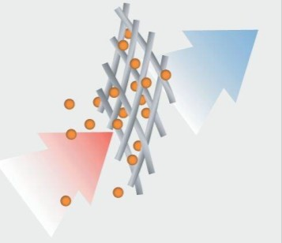
В отличие от обычных фильтров, фильтрация проходит не по механическому принципу (забивая поры фильтра), а по принципу электростатики; заряженные микроволокна фильтра притягивают пылевые частицы. Это придает фильтру открытую структуру, которая легко пропускает поток воздуха и одновременно уменьшает вероятность засорения.

Иными словами, при работе с ElectroBag пыль стремится задержаться на волокнах материала, а при работе с классическим пылесборником, пыль пролетает между волокнами, забивая поры фильтра.

ElectroBag - система сбора пыли, совмещающая в себе плюсы мешковых и контейнерных пылесосов. С одной стороны - высокая мощность всасывания, низкий уровень шума и гигиеничность в работе; с другой стороны – долгий срок службы фильтров, без значительных потерь силы всасывания.
Пылесборник BORK
Для производства мешков и фильтров используется синтетический диэлектрик (полипропилен), поляризация которого осуществляется в высоковольтном поле.

3 слоя электростатического фильтра, использующихся в мешках, электростатический моторный фильтр, после которого воздух выходит полностью очищенный и выпускной электростатический фильтр, удерживающий графитовую пыль со щеток двигателя, обеспечивают фильтрацию S-класса*.

При размерах пыли от 0,3 до 10 микрон фильтрация составляет 99,9991%.
*Фильтрация S-класса обеспечивает эффективность фильтрации 99.9% и более (по норме DIN 24184: задержка частиц более 0.3 микрон).
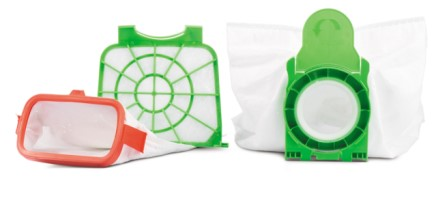Пылесборник BORK – высокоэффективный 3-х слойный пылесборник, специально разработанный как для людей, страдающих от аллергии, так и для тех, кто предъявляет повышенные требования к гигиене.
При удалении из пылесоса герметично закрывается специальной крышкой.
Производится в Германии
Главная особенность электростатической системы в продолжительном сроке эффективной фильтрации.
Также продолжительный срок службы пылесборника обеспечивает его особая форма, расположение и распределение воздушного потока в пылесосе.
Рекомендуется регулярно менять фильтры по мере загрязнения, как минимум, после использования 16 пылесборников
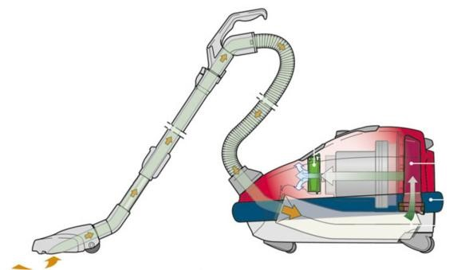Особенности моделей BORK V705, V703
Запатентованный мягкий бампер
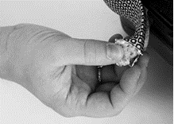Запатентованный двухслойный мягкий бампер из высокопрочного материала (полиуретан) надежно защищает Вашу мебель, стены и сам пылесос от механических повреждений.
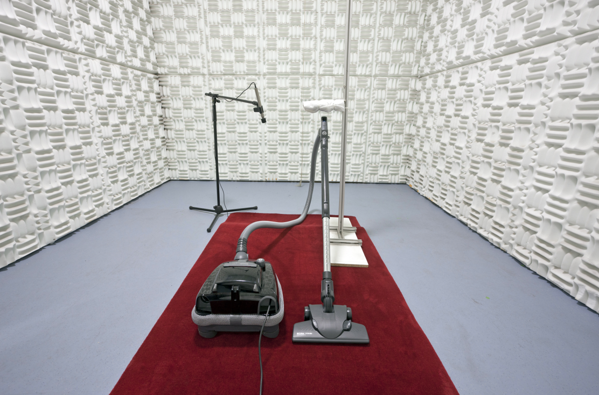Кроме того, уникальная конструкция бампера обеспечивает дополнительный комфорт при уборке, эффективно снижая уровень мощности шума пылесоса до 65 дБ, а выходящий воздух распределяется по всему периметру пылесоса, не поднимая пыль, находящуюся на полу. При необходимости бампер можно легко почистить или заменить.
Отличная маневренность
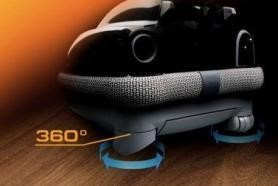Компактные размеры, прорезиненные, подвижные колеса, вращающиеся на 360° и высокая колесная база обеспечивают отличную маневренность и предсказуемость движения пылесоса, не повреждая твердые покрытия.
Рукоятка управления анатомической конструкции
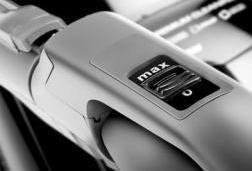Рукоятка анатомической конструкции, оснащенная электронным управлением мощностью всасывания для уборки твердых покрытий, ковров, штор и занавесок. Антистатическая пластина обеспечивает максимальный комфорт при управлении пылесосом.
Насадка BORK COMBI:
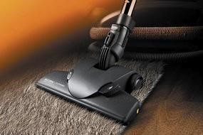Не имеющая аналогов двухпоточная система всасывания гарантирует эффективное удаление загрязнений на всей площади соприкосновения BORK COMBI с убираемой поверхностью.
Специальный амортизатор, гасящий удары, ребра жесткости, металлическая вставка для снятия электростатического напряжения и укрепления передней части и качественная фиксация пластин для сваливания ниток, шерсти и волос обеспечивают долгий срок службы насадки.
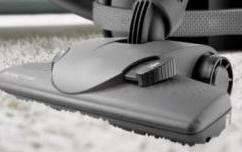Четыре прорезиненных ролика обеспечивают легкость скольжения. При этом не повреждается очищаемая поверхность и не происходит присасывания насадки к полу.
Эффективная уборка обеспечивается максимальным воздухотоком.
Съемная «плавающая» щетина легко может быть очищена от ниток, волос и шерсти.
При горизонтальном и вертикальном положении трубы щетка не теряет контакт с убираемой поверхностью, сохраняя угол 90 градусов. Шарнирный механизм обеспечивает отличную маневренность и постоянный контакт с очищаемой поверхностью.
Насадка BORK PARQUET
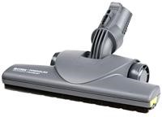- Паркетная насадка с натуральным ворсом и прорезиненными колесами подходит для уборки всех типов твердых покрытий.
- Щетки легко извлекаются для очистки.
- При работе насадки не повреждаются гладкие покрытия.
- Шарнирный механизм обеспечивает отличную маневренность и постоянный контакт с очищаемой поверхностью.
Внутренняя геометрия насадки в воздухозаборном отверстии имеет микроциклон, ускоряющий поток всасываемого воздуха.
Удобство использования и хранения дополнительных насадок
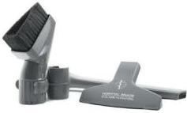Дополнительные насадки хранятся на корпусе пылесоса, что позволяет легко их заменять в процессе уборки.
Длина щелевой насадки составляет 29 см.
Удобная треугольная насадка для корпусной мебели с длинным ворсом позволяет легко пылесосить в углах.
Турбощетка BORK
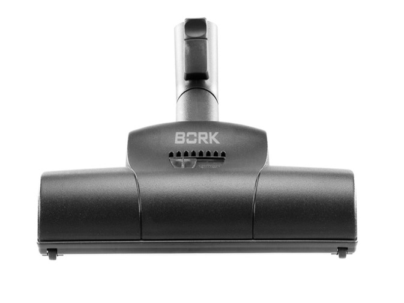Насадка для уборки ковровых покрытий (с регулировкой под ворс ковра). Рекомендована для сбора шерсти домашних животных.
Электрощетка BORK
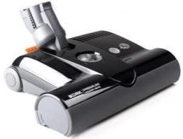- 4-х позиционный переключатель высоты вала.
- Электронная индикация эффективности работы щетки.
- Шарнирный механизм, обеспечивающий отличную маневренность и постоянный контакт с очищаемой поверхностью.
- Аварийная система, блокирующая вращение вала, при попадании под него тонких тканей.
- Прорезиненным бампером, защищающим мебель и саму щетку от повреждений.
- Специальным отсеком для быстрой очистки щетки.
- Вал щетки легко извлекается для очистки.
- Мощность: 175 Ватт
- Число оборотов: 2700 об/мин
- Ширина рабочей поверхности: 31 см
- Вес: 3.5 кг
- Цвет: черный
Удобная парковка
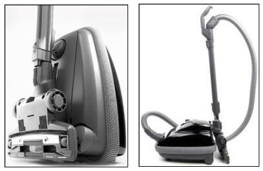Горизонтальная и вертикальная парковка обеспечивает удобное хранение пылесоса, не прибегая к разборке шланга и насадок.
Особенности моделей BORK V706, V707, V708, V709
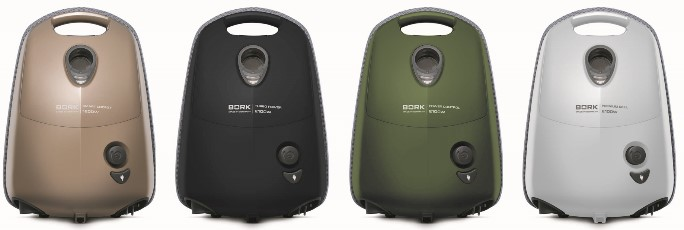Система сбора пыли ElectroBag
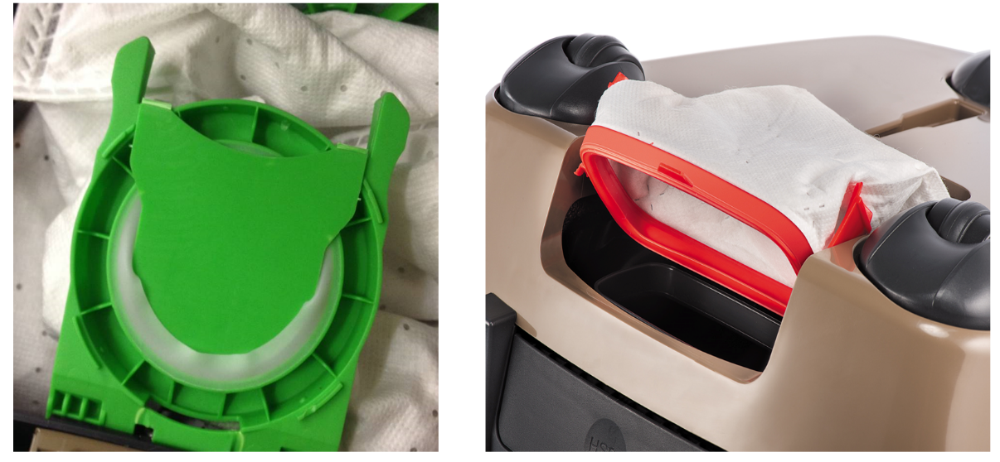Объем пылесборника 3.5 литра.
При удалении из пылесоса пылесборник герметично закрывается пластиковой крышкой. Такой пылесборник специально разработан для удобства людей, страдающих от аллергии, а также для тех, кто предъявляет повышенные требования к гигиене.
Если вынуть Electro-Grade Filter и включить пылесос, то можно показать его объем.
Новая конструкция противоударного бампера
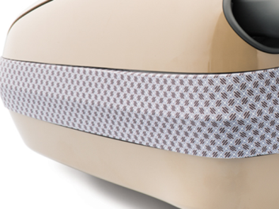Бампер надежно защищает мебель, стены и пылесос от механических повреждений, обеспечивает дополнительный комфорт при уборке, эффективно снижая уровень шума, а также выполняет декоративную функцию. Бампер состоит из трех компонентов: ударопрочного основания, мягкого резинового обода и сверхпрочного тканого материала. Процесс смены бампера стал намного проще. Материал ЕРР (Extruded Polypropile) более прочный, чем бампер прошлого поколения.
Проведенные на заводе тестирования по сравнению прочности бамперов прошлого и нового поколения подтвердили улучшенные свойства нового бампера.

Этот тест соответствует экстремальному случаю. Пылесос падает со стола с «силой» 10 кг. В результате, новая серия после 5 испытаний немного пострадала, но все осталось целым.
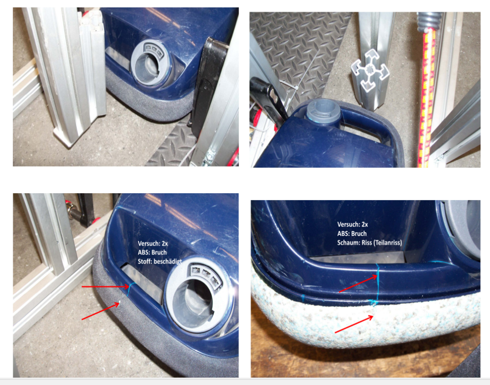У пылесосов прошлого поколения после 2 испытаний треснула ручка, материал бампера немного порвался.
Отсутствует рамка пылесборника

Отсутствует рамка мешка, которая может быть утеряна при удалении пылесборника (это плюс, по сравнению к другим производителям). Потребитель экономит деньги. Процесс замены мешка стал проще, благодаря запатентованной технологии – без рамки.
Интеллектуальный термоконтроль
В случае повышения температуры (из-за переполненного пылесборника или засора воздушных путей) в пылесосе:
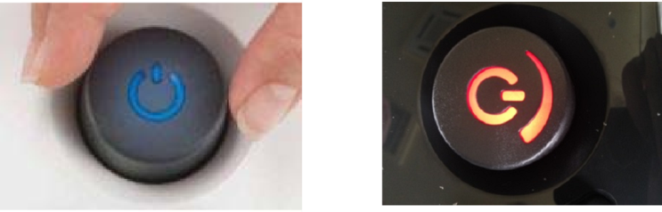Загорается красная лампочка, мощность пылесоса автоматически понижается, чтобы охладить пылесос. Пылесос работает дальше.
В случае экстремальный температуры/засора воздушных путей пылесос выключается.
Оптимизированные колёсная база
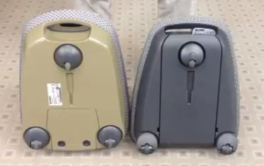За счет чего пылесос стал более маневренным и легко переезжает мелкие препятствия и кабель. Колесики легче вращаются, что легко продемонстрировать покупателю.
Симметричность корпуса
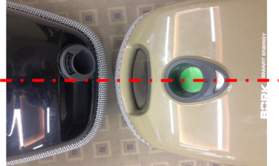Ручка и вход шланга находятся посередине корпуса, тем самым пылесос ровно и плавно следует за пользователем.
Механическая индикация засорения
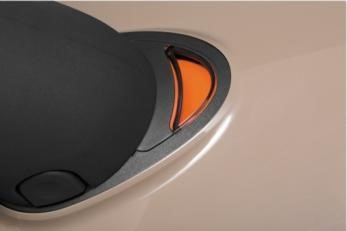Позволяет контролировать прогресс заполнения пылесборника. Включение оранжевого светового индикатора означает ограничение воздушного потока. Это указывает на заполнение пылесборника или на засорение воздушного канала. Чтобы проверить наполнение пылесборника, включите пылесос на полную мощность и поднимите щетку над полом. Если оранжевый индикатор наполнения пылесборника светится после замены пылесборника, а сам пылесборник при этом не заполнен, это означает, что создалось препятствие для прохождения воздушного потока через насадку, трубку или шланг. Устраните причину засорения, прочистив все эти детали.
Увеличенный воздухоток
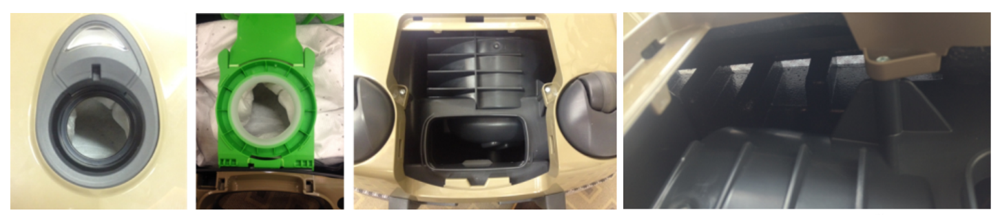Оптимально расположенные и увеличенные воздушные пути и низкий уровень шума. Увеличены: отверстие пылесборника, большое пространство за Electro-Grade Filter и большие отверстия в бампере. Больший воздухоток, способствует более эффективному всасыванию. Максимальный уровень силы всасывания остается в пылесосах новой линейки дольше на 50%. Благодаря мягко лежащему мотору его вибрация не передается в корпус пылесоса, и за счет этого он работает тише.

В основании шлага расположена резиновая прокладка, обеспечивающая герметичное соединение с пылесборником.

При презентации пылесос можно поставить в хорошо процентируемую позицию, пылесос можно легко вращать вокруг оси, показывая все функции.
Энергоэффективные двигатели
1. Что есть мощность всасывания?
Пылесос убирает пыль вакуумным способом. Это происходит за счет снижения давления внутри корпуса. Именно из-за разницы давлений образуется воздушный поток и втягивает в трубу загрязнения.
Качество уборки напрямую зависит от скорости и давления этого потока. Эти два параметра в совокупность и есть то, что называем мощностью всасывания. Но вакуум сам по себе образоваться не может, его создает мотор.
2. Почему двигатель теряет мощность? Например, мотор мощностью 2000Вт. На создание вакуума уйдет только 1500 Вт и мощность всасывания не превысит 500аВт.
Куда уходит остальная мощность потребления мотора:
2.1 Нагрев проводов в катушках
2.2 На работу против силы трения
2.3 На работу вспомогательных функций (турбощетка и т.п.)
2.4 На работу электроники.
И не более 75% мощности потребления двигателя будет работать на создание вакуума при идеальных условиях, т.к. она будет снижаться больше и больше в зависимости от совокупного сопротивления которое приходиться преодолевать воздушному потоку (фильтры, мешок и прочее).
3.1 Высокоэффективный энергосберегающий мотор высокой плотности получивший минимальную площадью трения внутренних блоков с мощной системой охлаждения (а холодный мотор – низкое энергопотребление, максимальная мощность) за счет конструкции крыльчатки способен выработать гораздо больше механической энергии при минимальном энергопотреблении за счет собственной динамики с потерей мощности на минимальных значениях.
3.2 Безупречное качество сборки воздушного канала обеспечивает герметичность и исключает дополнительные потери воздушного потока, что значительно снижает сопротивление и увеличивает эффективную мощность.
3.3 Дизайн и эффективное расположение радиусов каналов насадки не только снижает сопротивление тем самым увеличивая мощность всасывания, но и значительно снижает уровень шума аппарата.
3.4 Минимум электронных компонентов, конструктивное расположение агрегатов в достаточной близости друг от друга, что позволяет сократить в разы длину электропроводов и значительно снизить потери мощности за счет минимизации сопротивления и потерь на питание электронных блоков с высокоэффективным повышением КПД.
3.5 Продуманная система фильтрации.
Материал фильтров очистки воздуха имеют сбалансированный состав и получил способность безупречной очистки с минимальной потерей пропускной способности как при высоком, так и низком давлении воздушного потока.
Пылесос Bork
- Энергосберегающий двигатель высокой мощности
- Герметичность сборки канала воздухотока
- Инновационная система фильтрации
- Минимальное количество электронных компонентов и сопротивлений
- Эффективные сопряжения каналов насадки (щетки)
Особенности модели BORK V712
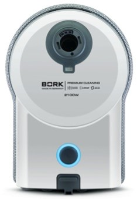Оптимальное распределение воздушного потока
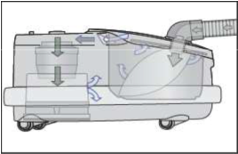Двигатель и пылесборник расположены, как в профессиональных пылесосах. При такой компоновке воздушный поток не проходит через слой пыли, а как следствие, не падает мощность всасывания.
Большой объём пылесборника
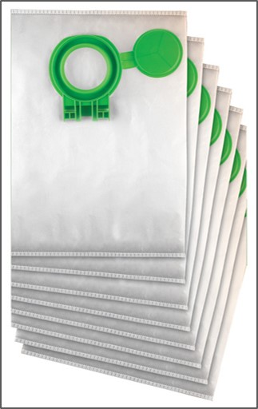Большой объём пылесборника – 6 литров, делает новый пылесос очень экономичным в использовании. Индикатор заполнения пылесборника показывает, когда следует сменить пылесборник Крышка для пылесборника делает процесс смены пылесборника легким и гигиеничным.
Высокая степень фильтрации s-класса
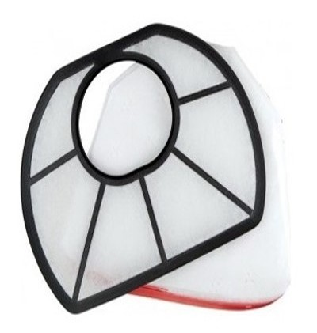Воздух проходит через три высокоэффективных фильтра: пылесборник с антиаллергенными свойствами ULTRA Bag, фильтр Hospital-Grade и выходной фильтр Micro-Hygiene-Filter. Фильтры изготовлены из материала обладающего электростатическими свойствами, что позволяет удерживать мельчайшие частицы пыли, не снижая силу всасывания.
Удобство использования и хранения дополнительных насадок
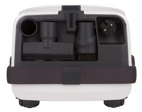Дополнительные насадки хранятся на корпусе, что позволяет легко их заменять в процессе уборки.
Удобная треугольная насадка для уборки корпусной мебели и полированных поверхностей с длинным ворсом позволяет легко пылесосить в углах.
Противоударный бампер
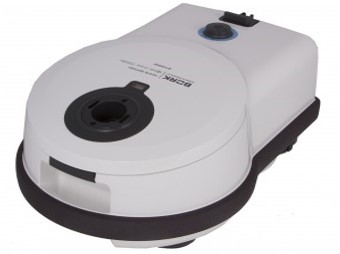Двухслойный мягкий бампер из сверхпрочного материала надежно защищает Вашу мебель, стены и пылесос от механических повреждений.
Конструкция бампера обеспечивает дополнительный комфорт при уборке, эффективно снижая уровень шума пылесоса до 65 дБ.

Выходящий воздух распределяется по всему периметру пылесоса, не поднимая пыль, находящуюся на полу. При необходимости бампер можно легко почистить или заменить.
Электронное управление мощностью всасывания
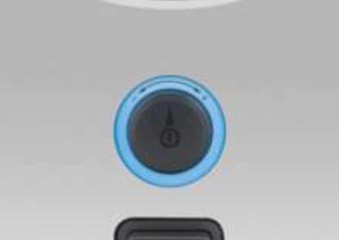Высокая мощность всасывания, низкий уровень шума, повышенная маневренность и автоматическая смотка шнура обеспечивают комфорт и удобство в использовании.
Эргономика и удобство
Пылесос оснащён LED индикатором мощности всасывания. Он вращается медленно при низком уровне мощности всасывания и быстро, когда мощность максимальна.
Четыре колеса с низким уровнем трения

Подвижные колеса имеют стальные оси, что обеспечивает их надёжность. А высокая манёвренность позволяет поменять направление движения пылесоса без всяких усилий.